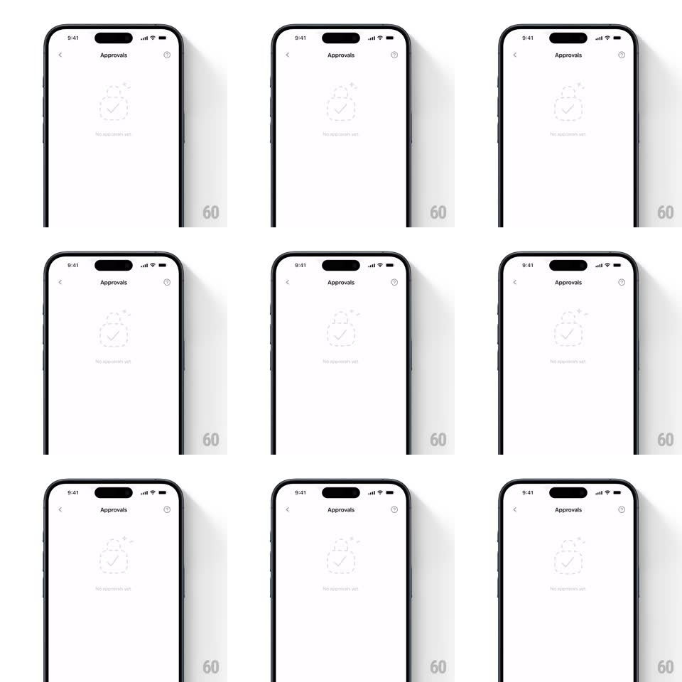

Media
Frame-by-frame

Rebuild this interaction 1:1: Family's approvals empty state - on the plain white "Approvals" screen, a faint dashed-outline lock illustration with a check badge and tiny sparkles floats gently up and down in a looping idle animation above the "No approvals yet" label.

Rebuild this interaction 1:1: Family's approvals empty state - on the plain white "Approvals" screen, a faint dashed-outline lock illustration with a check badge and tiny sparkles floats gently up and down in a looping idle animation above the "No approvals yet" label. ## Integration Integration: stack-agnostic spec - springs given as stiffness/damping, timed motions as duration + curve; map every value to your framework and animation library of choice. ## Scene White screen: "Approvals" nav header with back chevron, and centered in the body a light-gray illustration - a dashed-outline lock with a check-circle badge and small sparkle accents - over the "No approvals yet" caption. ## Motion spec Pattern: gentle float loop on an empty-state illustration. - The lock group bobs vertically (translateY +/-6px, 2.8s loop, ease-in-out) like it is weightless. - The check badge lags the lock slightly (same amplitude, ~150ms phase delay) so the group feels loosely connected, not rigid. - The sparkles twinkle independently (scale 0.6 -> 1 -> 0.6 + opacity, 1.6s, staggered phases). - The caption stays static beneath the floating group. ## Calibration - The whole illustration is faint (light gray, low contrast) - the float should be felt more than seen. - Amplitude stays small; this is an idle, not an entrance. ## Reduced motion Static illustration; no float or twinkle. ## Don't miss - The badge's phase lag is the detail that sells the float - a rigid group would read as a page scroll. - The loop never pauses - it runs indefinitely while the screen is open.